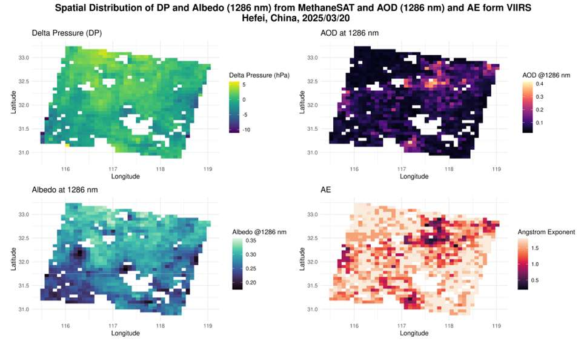
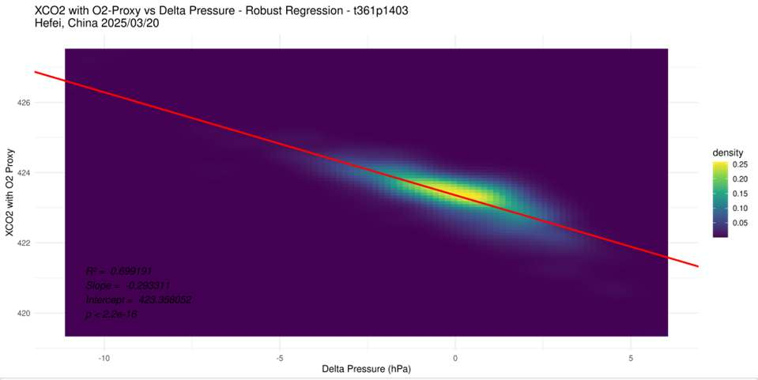
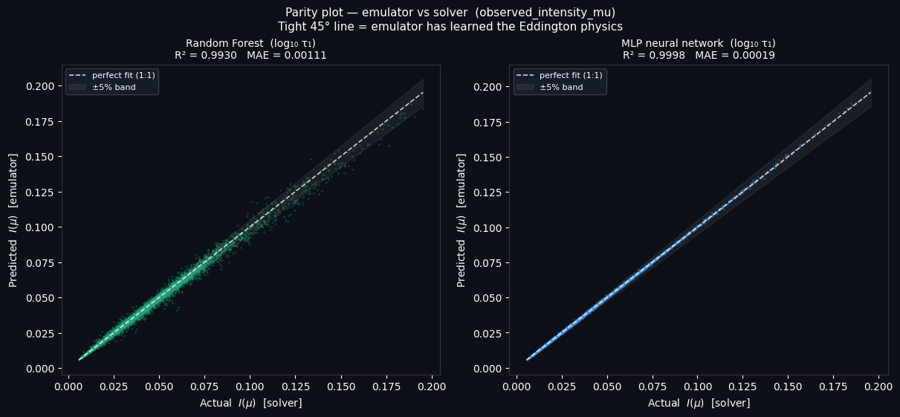
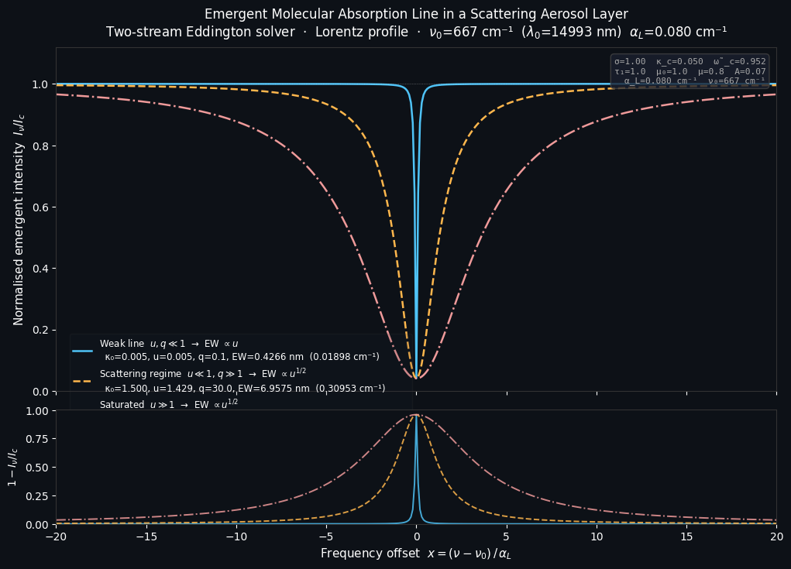
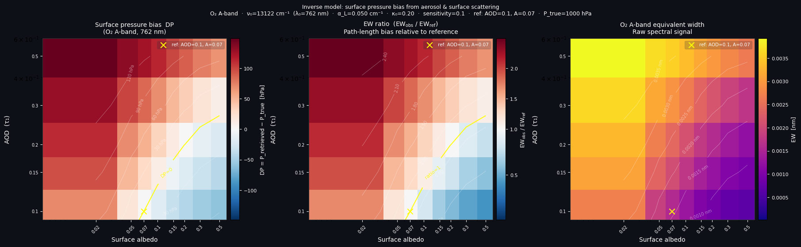
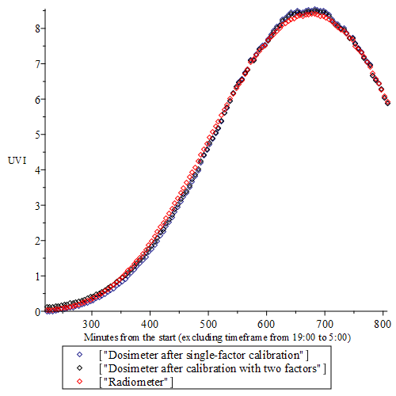

I build data pipelines and models that make satellite CO₂ measurements more accurate.
I work on satellite remote sensing, radiative transfer and machine-learning bias correction for greenhouse gas retrievals, with research at Harvard and Caltech.
Correcting aerosol bias in satellite CO₂ retrievals
MethaneSAT measures methane at high resolution, and its CO₂ product is currently used only as a proxy for the methane retrieval. My research asks whether we can remove the bias that aerosol scattering introduces into those CO₂ retrievals, so that MethaneSAT could also quantify regional CO₂ fluxes. Each stage below grew out of what the previous one could not solve.
1
Summer – Fall 2025 Harvard
Statistical correction with MethaneSAT and VIIRS
Role Sole developerAdvisor Prof. Steven C. WofsyFunding Harvard PRISE fellowship
MethaneSAT infers surface pressure from the oxygen absorption band at 1286 nm. Because O₂ is evenly mixed in the atmosphere, any gap between the retrieved pressure and the expected pressure (ΔP) should come from light-path errors such as aerosol scattering. I tested whether ΔP, combined with independent aerosol data from the VIIRS satellite, could be used in a regression that corrects the CO₂ retrieval.
Built automated R and Python pipelines to download, extract and align NetCDF data from two satellites with different resolutions, using the VIIRS 6 km Deep Blue aerosol product.
Matched observations in space and time (±90 minutes) across 100+ scenes.
Fit robust linear models of ΔP against aerosol optical depth, albedo and the Ångström exponent, using VIF checks for multicollinearity and AICc for model selection.

The regression variables mapped over Hefei, China (20 March 2025).

Retrieved XCO₂ (with the O₂ proxy) against ΔP. The CO₂ value still depends on ΔP, so the proxy does not fully remove the bias.
FindingΔP was strongly influenced by albedo, aerosols and the Ångström exponent, which undermines the O₂ proxy correction. A model using MethaneSAT's own albedo fit better across scenes than one using VIIRS data alone, likely because the two satellites pass over about 90 minutes apart. After months on this approach I concluded that a regression could not separate aerosol effects from albedo effects without knowing the true CO₂ over each scene. That pointed me toward physics-based modeling.
Context Graduate course project (EPS 200) feeding into my researchGuidance Prof. Steven C. Wofsy, Eleanor Walker
To understand the physics the regression missed, I took a basic two-stream radiative transfer toy model from my advisor and extended it into a tool for studying how aerosols, surface brightness and gas absorption interact. The goal was to see how errors in assumed aerosol or albedo turn into errors in retrieved surface pressure, and to make the model fast enough to run on millions of satellite pixels.
Extended the two-stream Eddington solver with Lambertian surface reflection and swept a 3D grid of aerosol optical depth (0.05–3.0), albedo (0.02–0.9) and absorption.
Generated 50,000 training points with Latin Hypercube Sampling and trained a random forest and a 3-layer MLP to emulate the solver.
Modeled how an absorption line forms in a scattering atmosphere (following McElroy, 1971) and built an inverse model of the resulting surface-pressure bias in the O₂ A-band.
MLP emulator
R² 0.9998
MAE 0.00019
Random forest
R² 0.9930
MAE 0.00111
Run time
Seconds
vs. hours for the solver on a full scene

Emulator against solver on the held-out test set. Both models sit on the 1:1 line.

Absorption line shapes in three regimes. The scattering-dominated regime only exists in a multiple-scattering atmosphere.

Surface-pressure bias across aerosol optical depth and albedo. Bright surfaces with heavy aerosol load lengthen the light path and overestimate pressure; dark surfaces underestimate it.Technical details
The solver computes upward and downward diffuse intensities as a function of optical depth, with Beer–Lambert attenuation of the direct beam, no downwelling at the top of the atmosphere and Lambertian reflection at the surface. Inputs are aerosol optical depth, single-scattering albedo, solar and viewing angles, and surface albedo.
For the emulators I replaced raw AOD with log₁₀(AOD) to handle its wide range, used an 80/20 train/test split, trained the MLP with a ReduceLROnPlateau schedule and clipped predictions at zero because radiance cannot be negative. In the random forest, log₁₀(AOD) and single-scattering albedo were the most important features, followed by albedo and then viewing geometry.
Next steps were to apply the emulator to real radiance data and to add a realistic asymmetry parameter (the model assumes isotropic scattering).
The physics model, experiments and analysis are my own. I wrote the ML emulator code with help from an AI assistant (Claude).
Using surface variation to correct light-path errors
Advisors Prof. Christian Frankenberg, Prof. Steven C. Wofsy
With a full radiative transfer model (vSmartMOM), I simulated satellite CO₂ retrievals under different aerosols, surfaces and viewing geometries, and developed a correction that works under noise levels similar to MethaneSAT's.
Median CO₂ bias
9.89 → 0.34 ppm
0.079%, within the 0.25% target
RMSE
1.25 ppm
0.29%, just above the target
Test set
88 scenes
simulated, MethaneSAT-like noise
Abstract
Accurate retrievals of greenhouse gas (GHG) emissions are essential to meaningfully informing policymakers on regional policies. However, the community has struggled to obtain retrievals of carbon dioxide (CO₂) with uncertainties below the real regional variations of gas concentration in the atmosphere at fine spatial scales. These variations are of only 1–3 ppm on a background of roughly 430 ppm, so the required accuracy is below 0.25%. The main source of uncertainty in CO₂ retrievals comes from aerosol scattering. Different aerosol types carry different scattering behaviors coherently with Mie scattering theory, which makes it difficult to correct their impact on greenhouse gas retrievals. To solve the problem, we explored the dependency of these biases on various aerosol parameters, surface reflectance and geometry by simulating satellite retrievals using the radiative transfer model vSmartMOM. We devised a pipeline that is able to estimate the impact of aerosols on the signal in simulated noise conditions similar to those of MethaneSAT, a high resolution GHG sensing satellite, by using the fact that atmospheric parameters can be considered roughly uniform over small areas, whereas the surface reflectance underneath is sharply varying. On 88 simulated test scenes, the best correction reduces the aerosol-induced CO₂ bias from a median of 9.89 ppm to 0.34 ppm (0.079%), within the 0.25% requirement, although its root mean squared error of 1.25 ppm (0.29%) remains just above it. These studies provide a basis for current and future high resolution GHG remote sensing missions to successfully quantify and correct aerosol-scattering-induced bias, thus retrieving more accurate estimates of GHG concentrations.
Unpublished work
The methods are not public yet. I'm happy to walk through the approach in an interview.
I'm now extending the method to real MethaneSAT observations, with the goal of an operational bias correction for high-resolution regional CO₂ flux estimates.
Other projects
Where I started
Jul – Nov 2023 · ARPA Valle d'Aosta, Italy · Published
Testing a new wearable UV dosimeter
Role High school research internSupervisors Henri Diémoz (ARPA), Prof. Anna Maria Siani (Sapienza)
The regional environmental protection agency had a new electronic UV dosimeter designed by Martin Allen at the University of Canterbury, New Zealand. It had never been tested in Italy. I compared three dosimeters against the agency's reference radiometer, recalibrated them, and then used them to measure real people's sun exposure.
I did most of the coding (in Maple) and designed the statistical tests. My supervisor provided the instruments and checked the rigor of the work.
The factory calibration overestimated the UV Index by about 10% around midday.
I compared a two-factor calibration with a single-factor one. The single-factor fit avoided non-physical UV readings at night, and the recalibrated dosimeters agreed with the reference within 10%.
A stability test three weeks later found calibration drift of −15.8% and −42.6% in two dosimeters, which became a key finding for the manufacturer.
In field tests, a hiker's dose of 242 J/m² came close to the erythema threshold for their skin type (250 J/m²), matching the mild sunburn they reported.
Before: factory calibration (green) vs. reference.

After recalibration.
Spring 2025 · Harvard CS 32 · Team of 3
Cardona-gram, a word game
Team Ana Isabel Cardona, Leonardo Di Tommaso, Tim Langenbahn
A Python anagram game: the player gets a random set of letters and has to find every English word hidden in it. It has a classic mode, a survival mode with three lives, and a 60-second timed mode. This was one of my first coding projects, written without generative AI.
I built the word engine: generating every permutation of three or more letters and checking which ones are real words. We tried an online dictionary API, an offline spell-check library and a CSV of about 4,000 common words. We chose the CSV because it was faster, needed no extra dependencies and produced words players actually know, at the cost of missing rarer words.
Keep only real wordsword_search.py · ~4,000-word list
↓
Round startsRegenerate the set if no words are found
Outlined steps are the parts I wrote.
About
Physics student from the Italian Alps
I'm a physics student at Harvard (AB expected 2028), originally from Aosta, Italy. I got into atmospheric science through a high school internship at my regional environmental agency, and I've worked on how to measure greenhouse gases from space ever since.
What I enjoy most is the full loop: getting messy real-world data into shape, building a model, finding out where it breaks, and figuring out why. Before college I was regional president of student representatives in Valle d'Aosta and a G7 Young for Education delegate.
Languages & toolsPython, Julia, R (terra, raster, ncdf4, tidyverse, ggplot2), Git, LaTeX, Maple
Data science & MLRegression modeling, random forests, neural networks, spatial data analysis, model selection (AICc, VIF), time series, automated pipelines
DomainSatellite remote sensing, radiative transfer, greenhouse gas retrievals, instrument calibration
SpokenEnglish (fluent), Italian (native), French (proficient)